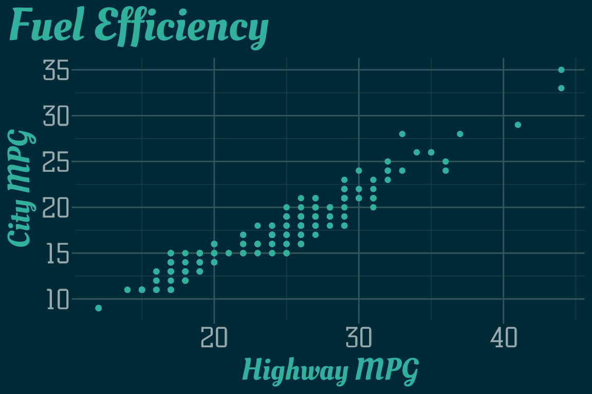
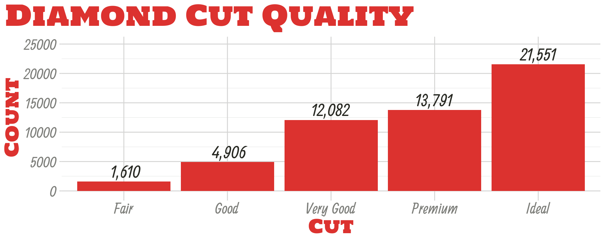
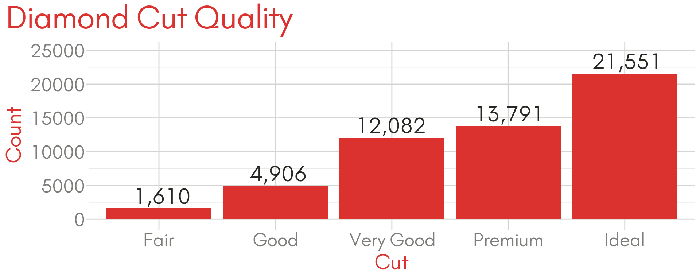

xaringanthemer provides two ggplot2 themes for your xaringan slides to help your data visualizations blend seamlessly into your slides. Use theme_xaringan() to create plots that match your primary slide style or theme_xaringan_inverse() to match the style of your inverse slides.

Key Features
The ggplot2 themes uses the colors and themes from the xaringanthemer style functions, if you set your theme inside your slides. Otherwise, it draws from the
xaringan-themer.cssfile.The themes pick appropriate colors for titles, grid lines, and axis text, and also sets the default colors of geoms like
ggplot2::geom_point()andggplot2::geom_text(). There are also monotone color and fill scales based around the primary accent color used in your xaringan theme.If you use Google Fonts in your slides, the ggplot2 themes use the showtext package to automatically match the title and axis text fonts of your plots to the heading and text fonts in your xaringan theme.
I’ve done my best to set up everything so that it just works, but sometimes the showtext package adds a bit of complication to the routine data visualization workflow. At the end of this vignette I include a few tips for working with showtext.
Setup Your Theme
theme_xaringan() is designed to automatically use the fonts and colors you used for your slides’ style theme. Here I’m going to use a moderately customized color theme based on style_mono_accent(), that results in the xaringan theme previewed in the slides above.
I’ve also picked out a few fonts from Google Fonts that I would probably never use in a real presentation, but they’re flashy enough to make it easy to see that we’re not using the standard default fonts.
```{r xaringan-themer, include=FALSE, warning=FALSE}
library(xaringanthemer)
style_mono_accent(
base_color = "#DC322F", # bright red
inverse_background_color = "#002B36", # dark dark blue
inverse_header_color = "#31b09e", # light aqua green
inverse_text_color = "#FFFFFF", # white
title_slide_background_color = "var(--base)",
text_font_google = google_font("Kelly Slab"),
header_font_google = google_font("Oleo Script")
)
```If you use a hidden chunk like this one inside your slides’ R Markdown source file, theme_xaringan() will know which colors and fonts you’ve picked.
Adding theme_xaringan() to a ggplot, like this demonstration plot using the mpg dataset from ggplot2, changes the colors and fonts of your plot theme.
library(ggplot2)
g_base <- ggplot(mpg) +
aes(hwy, cty) +
geom_point() +
labs(x = "Highway MPG", y = "City MPG", title = "Fuel Efficiency")
# Basic plot with default theme
g_base
# Fancy slide-matching themed plot
g_base + theme_xaringan()With theme_xaringan() the fonts and colors match the slide theme. The default colors of points (like other geometries) has been changed as well to match the slide colors.
To restore the previous default colors of ggplot2 geoms, call
Add theme_xaringan_inverse() to automatically create a plot that matches the inverse slide style.
# theme_xaringan() on the left, theme_xaringan_inverse() on the right
g_base + theme_xaringan_inverse()
Using theme_xaringan() without calling a style function
Once you’ve set up your custom xaringan theme, you might want to use the theme’s CSS file for new presentations instead of rebuilding your theme with every new slide deck.
In these cases, theme_xaringan() will look for a CSS file written by xaringanthemer in your slides’ directory or in a sub-folder under the same directory that it can use to determine the colors and fonts used in your slides.
If you happen to have multiple slide themes written by xaringanthemer in the same directory, the one named xaringan-themer.css will be used. If xaringanthemer picks the wrong file, you can use the css_file in theme_xaringan() to specify exactly which CSS file to use.
theme_xaringan(css_file = "my-slide-style.css")Note that you can use theme_xaringan() anywhere you want, not just in xaringan slides! (For example, theme_xaringan() is working great in these vignettes!) This means that you can use your plot theme in reports and websites while maintaining a consistent look and feel or brand.
Finally, you don’t even need a xaringanthemer CSS file. You can specify the key ingredients for the theme as arguments to theme_xaringan(), namely text, background, and accent colors as well as text and title fonts.
The R chunk below replicated the demonstrated theme, but doesn’t require a slide style to be set or stored in a CSS file.
theme_xaringan(
text_color = "#3D3E38",
background_color = "#FFFFFF",
accent_color = "#DC322F",
text_font = "Kelly Slab",
text_font_use_google = TRUE,
title_font = "Oleo Script",
title_font_use_google = TRUE
)Colors
As demonstrated above, theme_xaringan() and theme_xaringan_inverse() modify the default colors and fonts of geometries. This means that geom_point(), geom_bar(), geom_text() and other geoms used in your plots will reasonably match your slide themes with no extra work.
g_diamonds <- ggplot(diamonds, aes(x = cut)) +
geom_bar() +
labs(x = NULL, y = NULL, title = "Diamond Cut Quality") +
ylim(0, 25000)
g_diamonds + theme_xaringan()Whenever theme_xaringan() or theme_xaringan_inverse() are called, the default values of many of ggplot2 geoms are set by default. You can opt out of this by setting set_ggplot_defaults = FALSE when using either theme. You can also restore the geom aesthetic defaults to their original values before the first time theme_xaringan() or theme_xaringan_inverse() were used by running
Custom Color and Fill Scales
xaringanthemer includes monotone color and fill scales to match your ggplot2 theme. The scale functions all follow the naming pattern scale_xaringan_<aes>_<data_type>(), where <aes> is replaced with either color or fill and <data_type> is one of discrete or continuous.
These scales use colorspace::sequential_hcl() to create a sequential, monotone color scale based on the primary accent color in your slides. Color scales matching the inverse slides are possible by setting the argument inverse = TRUE.
ggplot(diamonds, aes(x = cut)) +
geom_bar(aes(fill = ..count..), show.legend = FALSE) +
labs(x = NULL, y = "Count", title = "Diamond Cut Quality") +
theme_xaringan() +
scale_xaringan_fill_continuous()
ggplot(mpg, aes(x = hwy, y = cty)) +
geom_count(aes(color = ..n..), show.legend = FALSE) +
labs(x = "Highway MPG", y = "City MPG", title = "Fuel Efficiency") +
theme_xaringan_inverse() +
scale_xaringan_color_continuous(breaks = seq(3, 12, 2), inverse = TRUE, begin = 1, end = 0)In general, these color scales aren’t great at representing the underlying data. In both examples above, the color and fill scales duplicate information displayed via other aesthetics (the height of the bar or the size of the point). I recommend using these scales primarily for style, although the scales can be more or less effective depending on your color scheme.
The scales come with a few more options:
Choose a different primary color using the
colorargument.Use the inverse color slide theme color with
inverse = TRUE(only applies whencoloris not supplied).Invert the direction of the discrete scales with
direction = -1.Control the range of the continuous color scale used with
beginandend. You can also invert the direction of the continuous color scale by settingbegin = 1andend = 0.
Fonts
Automatically match slide and plot fonts
xaringanthemer uses the showtext and sysfonts packages by Yixuan Qiu to automatically download and register Google Fonts for use with your ggplot2 plots.
In your slide theme, use the <type>_font_google argument with the google_font("<font name>") helper (or the default xaringanthemer fonts) and theme_xaringan() will handle the rest. In our demo theme, we used style_mono_accent() with
-
text_font_google = google_font("Kelley Slab")and -
header_font_google = google_font("Oleo Script").
g_diamonds_with_text <-
g_diamonds +
geom_text(aes(y = ..count.., label = format(..count.., big.mark = ",")),
vjust = -0.30, size = 8, stat = "count") +
labs(x = "Cut", y = "Count")
g_diamonds_with_text + theme_xaringan()
theme_xaringan() applies the header font to the plot and axis titles and the text font to the axis ticks labels and any text geoms or annotations.
Manually specify plot fonts
You can also specify specific fonts for your plot theme. Both text_font and title_font in theme_xaringan() and theme_xaringan_inverse() accept google_font()s directly.
g_diamonds_with_text +
theme_xaringan(
text_font = google_font("Ranga"),
title_font = google_font("Holtwood One SC")
)
Using fonts not in Google Fonts
If you want to use a font that isn’t in the Google Fonts collection, you need to manually register the font with sysfonts so that it can be used in your plots.
I found a nice open source font called Glacial Indifference by Alfredo Marco Pradil available at fontlibrary.org. In my theme style function, I would use
style_mono_accent(
text_font_family = "GlacialIndifferenceRegular",
text_font_url = "https://fontlibrary.org/face/glacial-indifference"
)but sysfonts won’t know where to find the TTF font files for this font.
To register the font with sysfonts, we use sysfonts::font_add(), but first we need to download the font file — the sysfonts::font_add() function requires the font file to be local.
By inspecting the CSS file at the link I used in text_font_url, I found a direct URL for the .ttf files for GlacialIndifferenceRegular. I’ve included the code I used to download the font to a temporary file below, but in case the URL breaks, I’ve included Glacial Indifference in the xaringanthemer package.
font_url <- file.path(
"https://fontlibrary.org/assets/fonts/glacial-indifference/",
"5f2cf277506e19ec77729122f27b1faf/0820b3c58fed35de298219f314635982",
"GlacialIndifferenceRegular.ttf"
)
font_temp <- tempfile()
download.file(font_url, font_temp)
# Path to the local custom font file
font_temp <- system.file(
"fonts/GlacialIndifferenceRegular.ttf", package = "xaringanthemer"
)
# Register the font with sysfonts/showtext
sysfonts::font_add(family = "GlacialIndifferenceRegular", regular = font_temp)
# Now it's available for use!
g_diamonds_with_text +
theme_xaringan(
text_font = "GlacialIndifferenceRegular",
title_font = "GlacialIndifferenceRegular"
)
Tips for using the showtext package
Working with fonts is notoriously frustrating, but showtext and sysfonts do a great job ensuring that Google Fonts and custom fonts work on all platforms. As you’ve seen in the examples above, the process is mostly seamless, but there are a few caveats and places where the methods used by these packages may interrupt a typical ggplot2 workflow.
R Markdown
To use the showtext package in R Markdown, knitr requires that the fig.showtext chunk option be set to TRUE, either in the chunk producing the figure or globally in the document.
xaringanthemer tries to set this chunk option for you, but in some circumstances it’s possible to call theme_xaringan() in a way that xaringanthemer can’t set this option for you. When this happens, xaringanthemer will produce an error:
Error in verify_fig_showtext(fn) :
To use theme_xaringan_base() with knitr, you need to set the chunk
option `fig.showtext = TRUE` for this chunk. Or you can set this option
globally with `knitr::opts_chunk$set(fig.showtext = TRUE)`.If you find yourself facing this error, follow the instructions and choose one of the two suggestions:
Add
fig.showtext = TRUEto the chunk producing the figureOr set the option globally in your
setupchunk withknitr::opts_chunk$set(fig.showtext = TRUE).
MacOS
On MacOS, you’ll need to have xquartz installed for sysfonts to work properly. If you use homebrew, you can install xquartz with
In RStudio
showtext and RStudio’s graphic device don’t always work well together. Depending on your version of RStudio, if you try to preview plots that use theme_xaringan(), the fonts in the preview will still be the default sans font or you may not see a plot at all.
To work around this, open a new quartz() (MacOS) or x11() (Windows/Unix) plot device. The plots will then render in a separate window. I usually create a quartz() device with a similar size ratio to my slides.